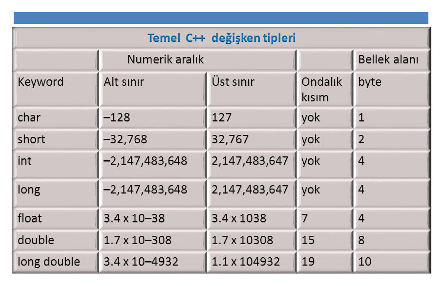

VERİ YAPILARI
Veriden Bilgiye Geçiş
Bilgisayarların dilinde 0 ve birlerden başka kalime olmadığını ve yazdığımız her karakterin, her sayının, her sözcüğün ve her komutun bilgisayarlar tarafından kaydedilmesi, anlaşılabilmesi ve işlenebilmesi ikili (binary) sayı sisteminde kodlanması gerektiğinden bahsetmiştik. İşte biz bu yapıyı veri olarak adlandırıyoruz.
Veriler bilgisayar belleğinde 1 ve 0’lardan oluşan bir "Bit" dizisi olarak saklanır. Bu verinin yazılımlar aracılığı ile ete kemiğe büründürülmüş, bir anlam kazanmış haline ise bilgi diyoruz.
Bit dizisi biçimindeki verinin anlamı, verinin yapısından ortaya çıkarılır. Herhangi bir verinin yapısı değiştirilerek farklı bilgiler elde edilebilir.
Örneğin; 32 bitlik “0100 0010 0100 0001 0100 0010 0100 0001” veriyi ele alalım.
Bu veri ASCII veri yapısına dönüştürülürse, her 8 bitlik veri grubu bir karaktere karşılık düşer;
B
Bu veri BCD (Binary Coded Decimal) veri yapısına dönüştürülürse, bitler 4’er bitlik gruplara ayrılır ve her grup bir haneye karşılık gelir;
4
2
4
1
4
4
4
1
Bu veri işaretsiz 16 bitlik tamsayı ise, her 16 bitlik veri bir işaretsiz tamsayıya karşılık düşer;
16961
16961
Bu veri işaretsiz 32 bitlik tamsayı ise, 32 bitlik bütün grup olarak bir işaretsiz tamsayıya karşılık düşer;
1111573057
Belleğin Yapısı
Yapısal olarak bellek, büyüklüğüne bağlı olarak binlerce, milyonlarca l’er Byte (8 Bit)’lik veriler saklayabilecek biçimde tasarlanmış bir elektronik devredir. Bellek, her byte’ı bir hücre ile gösterilebilecek büyükçe bir tablo olarak çizilebilir. Örneğin 1GB bir bellek, 1024*1024*1024 = 1073741824 adet hücreden oluşur. Her hücreye bir adres atanmıştır. Bu adreslerin değerleri 0 ila belleğin sahip olduğu üst değere bağlı olarak değişebilir.
Bellek adresleri genellikle onaltılık (hexadecimal) sayı sisteminde ifade edilir. 0x3fffd14 sayısı onluk (decimal) sayı sisteminde 67108116 sayına karşılık gelir. Bunun anlamı, tam değişkeni, program çalıştığı sürece, bellekte 67108116. - 67108120. numaralı gözler arasındaki 4 baytlık hücreyi işgal edecek olmasıdır.
VERİ YAPILARI
Veri Yapısı Nedir?
Bir kitaba ulaşabilmek için kitapların düzeni ile ilgili bilgiye ihtiyaç vardır. Veri yapısı (Data Structure) verinin veya bilginin bellekte tutulma şeklini veya düzenini gösterir.
Tüm programlama dillerinin, genel olarak, tamsayı, kesirli sayı, karakter ve sözcük gibi kabul edilmiş veri tipi tanımlamaları vardır. Bir program değişkeni bile basit bir veri yapısı olarak kabul edilebilir. Programcı, programını yazacağı problemi incelerken, program algoritmasını oluştururken, programda kullanacağı değişken ve sabitlerin veri tiplerini bu tanımlamaları dikkate alarak belirler. Program, belleğe saklama/yazma ve okuma işlemlerini, işlemci aracılığı ile işletim sistemine yaptırtır. Yani programın çalışması süresince program, işlemci ve işletim sistemi ile birlikte iletişim halinde, belleği kullanarak işi ortaya koyarlar. Veri için seçilen tip bilgisayarın birçok kısmını etkiler, ilgilendirir. Bundan dolayı uygun veri tipi seçimi programlamanın önemli bir aşamasıdır. Veri yapıları, büyük (ve potansiyel olarak artan) miktarlardaki verilerin verimli bir şekilde yönetilmesi, depolanması, organize edilmesi ve kullanılması için gereklidir. Programcının doğru karar verebilmesi, veri tiplerinin yapılarını tanımasına bağlıdır. Zayıf bir şekilde birbirine bağlanmış iyi tanımlanmamış program öğeleri herhangi bir aşamada kolaylıkla iş göremez hale gelebilir.
Program, işlemci ve işletim sistemi her veri yapısına ait verileri farklı biçim ve teknikler kullanarak, bellekte yazma ve okuma işlemleriyle uygulamalara taşırlar. Bu işlemlere Veri Yapıları Algoritmaları denir. Çeşitli veri yapıları oluşturmak ve bunları programlarda kullanmak programcıya programlama esnekliği sağlarken, bilgisayar donanım ve kaynaklarından en etkin biçimde faydalanma olanakları sunar. Ayrıca programın hızını ve etkinliğini arttırır, maliyetini düşürür.
Veri Yapıları Temel/İlkel (primitive), Basit (simple), Birleşik (compound) olarak üç sınıfta incelenebilir;
Temel veri yapıları, en çok kullanılan ve diğer veri yapılarının oluşturulmasında kullanılırlar.
Basit veri yapıları, temel veri yapılarından faydalanılarak oluşturulan diziler (arrays), stringler, yapılar (structures) ve birleşimler (unions)’dir.
Birleşik veri yapıları, temel ve basit veri yapılarından faydalanılarak oluşturulan diğerlerine göre daha karmaşık veri yapılarıdır.
Değişkenler ve Veri Tipleri
Değişkenler programlamada geçici bilgileri sakladığımız ve programcı tarafından belirlenen yapılardır. Değişkenler programlamanın temel yapısını oluşturmaktadır ve tüm programlama dillerinde kullanılan bir yapıdır. Değişkenler sayesinde program içinde yaptığımız işlemleri hafıza da tutar ve gerektiği yerlerde kullanırız.
Bir programlama dillinde, belli bir tipte değişken tanımlanıp ve bir değer atandığında, o değişkene dört temel özellik eşlik eder:
Değişkenin adı,
Bellek üzerindeki adresi (kaydedildiği yer),
Değişkenin sahip olduğu değer (içerik),
Değişkenin veri tipi (tamsayı, ondalıklı sayı, char, string vs.)
Değişkenlerde Veri Tipi, adından da anlaşılacağı üzere saklanacak verinin tipini belirtmektedir. Bunlar sayılar, sözcükler ve programatik alanlar olabilir. Her değişkenin program içinde kullanıldığı ve çağrıldığı benzersiz bir ismi vardır. Bu değişkenlere, daha sonra kullanmak üzere bir değer atarız , işletim sistemimiz de bu değişken içerisine koyduğumuz değeri hafızada tutar.
Bu yazıda, konuyu daha iyi kavramanız açısından yalnızca ilkel (primitive) veri tiplerinden bahsedip diğer veri tiplerini daha ileri konularda ele alacağız. İlkel veri tipleri genel olarak üç tanedir.
Integer (Tamsayı)
Float (Ondalıklı sayı)
Char (Karakter veya sembol)
Bir çok programlama dilinde daha fazla ilkel (primitive) veri tipi bulunsa da bunlar temel olarak bu üç yapıyı esas alırlar. Mesela bazı dillerde tamsayılar, short, int ve long olarak üç kısma ayrılmıştır. Bu ayrım verinin yapısına değil uzunluğuna bağlı olarak yapılmış bir düzenlemedir. Yani short 2 byte uzunluğunda yer tutup bununla 65536 sayı üretebilirken (216), integer veri tipi 4 byte, long veri tipi 8 bytetan oluşur ve çok daha fazla sayı üretebilirler. Ama yapı olarak baktığımızda sonuçta hepsi de tam sayıdır.
Yine aynı şeyi ondalıklı sayılar, yani float veri tipi için de söyleyebiliriz. Mesela double veri tipi de floattan daha çok sayı üretebilen bir ondalıklı sayıdır, bellekte daha fazla yer kaplar ama sonuçta ondalıklı sayıdır.
Char veri tipinin çok daha özel bir yapısı var. Toplamda 1 byte (8 bit) uzunluğa sahip olan bu veri tipi, karakterlerin ve sembollerin ASC kod tablosunda yer alan sayısal karşılığını tutar. (Eğer okumamışsanız konuyu daha iyi anlamak için “Veriler Bilgisayarda Nasıl Saklanır” konusunu okuyabilirsiniz.)
“Peki ya stringler?” dediğinizi duyar gibiyim. Türkçede katar anlamına gelen bu veri tipi, adından da anlaşılacağı üzere primitive (ilkel) bir veri tipi değil, bir tür array, yani dizidir. Karakterlerin (char) art arda sıralanmasıyla oluşur.
Tabi bir de “boolean” diye bir veri tipimiz var. Bir byte uzunluğundaki bu veri tipi içerisinde 0 veya 1 tamsayılarından birisini barındırır. 0 ise false (yanlış), 1 ise true (doğru) anlamı taşır. Ama aslında 0 haricindeki bütün değerler true (doğru) değeri döndürürler.
Son olarak, çok sık karşınıza çıkacak olan “null” kavramından da bahsedip konuyu şimdilik sonlandıralım. Herhangi bir değişkenin değer atanmamış haline biz null adını veriyoruz. Bir değişken tanımlandığında içerisine herhangi bir değer yerleştirilmemişse (atanmamışsa) null olarak adlandırılır.
Primitive (İlkel) Veri Tipleri
